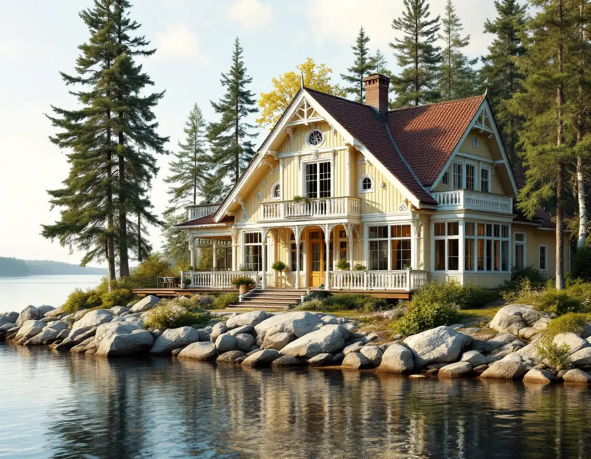
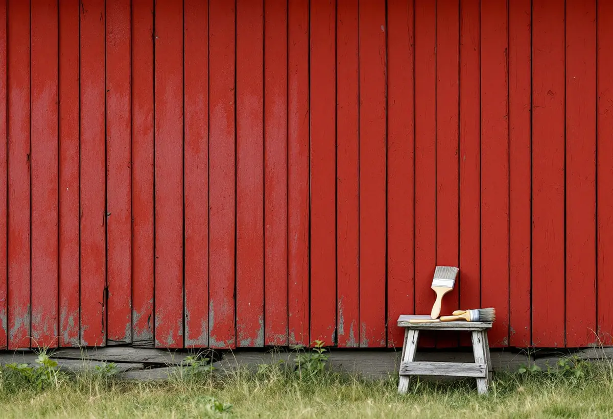

Platsbesök
Vi tittar på panel, snickerier, fönster och uthus och gör skrapprov för att se vilken färgtyp som sitter på.
På Mälaröarna kan en sommarvilla från 1800-talet, en rödmålad stuga och en villagata från 1970-talet ligga nära varandra, och de tre husen behöver helt olika färg och förarbete. Geal Entreprenad AB målar fasader, fönster och snickerier ute och inne i hela Ekerö kommun, tar reda på vilken färg som sitter på huset innan något beställs och lämnar ett skriftligt kostnadsförslag efter ett gratis platsbesök.

Ekerö kommuns kulturmiljöprogram från 2015 beskriver hur närheten till Stockholm tidigt gjorde öarna populära som sommarnöje. När ångbåtar började trafikera Mälaröarna i mitten av 1800-talet blev resan enklare, och sommarvillor uppfördes åt välbärgade stockholmare. Under 1900-talet tillkom fler områden med fritidshus.
På Kungshatt finns enligt programmet ett femtiotal sommarvillor från tiden kring sekelskiftet 1900, med rikt dekorerad panelarkitektur och öppna eller inglasade verandor. Ett sådant hus har mycket snickerier i förhållande till fasadytan: listverk, foder, räcken och spröjsade fönster som skrapas, lagas och målas för hand.
Östra Ekerö domineras i stället av villor och radhus från andra halvan av 1900-talet. Programmet nämner Väsby, med enhetlig bebyggelse från tidigt 1970-tal, och Närlunda, där villor från 1960-talet dominerar. I Älvnäs, Gällstaö och Erikssten har sommarbostäder permanentats och förtätats, och sommarvillor och sportstugor från 1900-talet har byggts om eller rivits.

Ekerö kommun skriver att fasadändringar inte kräver bygglov på ett en- eller tvåbostadshus, om inte fastigheten ligger i ett område som bedömts som särskilt värdefullt. Efter ändringarna i plan- och bygglagen, som trädde i kraft den 1 december 2025, har kommunen gjort en ny bedömning av sina särskilt värdefulla byggnader och områden. De visas som undantagsområden i Ekerökartan, och där kan de lovbefriade reglerna inte användas.
Boverket räknar ett byte av kulör, till exempel från rött till vitt, som en fasadändring, medan ommålning i samma kulör normalt räknas som underhåll. Att gå från slamfärg till en annan färgtyp är inget kulörbyte, men det kan bedömas påverka husets yttre karaktärsdrag. En lovfri fasadändring får heller inte strida mot detaljplanen.
Är du osäker ger kommunen ett enkelt råd: mejla ett foto på huset till info@ekero.se och beskriv vilken ändring du vill göra, så avgör kommunen om bygglov behövs. Kulturmiljöprogrammet är rådgivande, men för tätorten i östra Ekerö skriver det att befintliga byggnader bör respekteras när det gäller proportioner, fasadfärg, fönster, panel, entréer och räcken, och det gäller enligt programmet även villor och sportstugor.
Röd slamfärg finns på allt från uthus till hela miljöer. I barnbyn Skå på Färingsö, som Stockholms stad byggde upp på 1940-talet kring Skå gård, uppfördes tolv rödmålade små stugor. För västra Ekerö skriver kulturmiljöprogrammet att torpens och gårdarnas skala, färgsättning och gestaltning bör respekteras.
Riksantikvarieämbetets handbok om traditionella färgtyper beskriver slamfärgen som den i särklass mest underhållsvänliga. Vid ommålning borstas fasaden med stål- eller rotborste tills lös färg och lavar är borta, spikar som rest sig slås i och rötskadat ändträ lagas med friskt virke. Därefter räcker normalt en strykning.
Handboken är lika tydlig om begränsningen: en slamfärgad yta ska bara målas om med slamfärg, eftersom det inte går att återvända när en annan färgtyp väl har strukits på, ens om den gamla färgen tas bort. Den varnar också för färger som säljs med namn som påminner om rödfärg men har andra bindemedel, till exempel latextillsatser. Ska taket på en gammal bod eller lada ses över samtidigt, läs mer under takläggare på Ekerö.
En sommarstuga som byggts om till åretruntbostad har ofta fått nya delar i omgångar: en tillbyggnad med annan panel, nya fönster på en sida och färg från flera decennier. Riksantikvarieämbetet påpekar att linoljefärg, slamfärg och kalkfärg ännu på 1950-talet hörde till de vanligaste färgerna, så även ett hus från 1900-talets mitt kan ha en traditionell färg under de senare lagren.
Därför gör vi skrapprov på flera ställen innan färgtypen bestäms. Efter tvätt och skrapning avgör skadornas omfattning hur mycket som ska grundas. Enligt handboken räcker det att grunda de skadade partierna om ungefär en tiondel av färgskiktet är skadat, medan hela ytan bör grundas när 30–40 procent är skadat. Grått och luddigt trä skrapas och slipas bort först.
Inomhus målar vi väggar, tak, snickerier och dörrar och tapetserar, och i en stuga som värms året runt först på senare år tittar vi efter fuktfläckar innan väggarna målas. Är vinden kall och dragig kan vindsisolering vara värt att göra innan rummen under målas om.
Vi tittar på panel, snickerier, fönster och uthus och gör skrapprov för att se vilken färgtyp som sitter på.
Fastigheten kontrolleras i Ekerökartan och detaljplanen, och vid tvekan frågar vi kommunen.
Färgtyp, kulör, förarbete och antal strykningar står med, och snickerierna redovisas för sig.
Tvätt eller borstning, skrapning, lagning av trä och kittning av fönster. Rabatter och bryggor skyddas.
Grundning och strykningar i lämpligt väder, med de torktider färgtypen kräver.
Vi går igenom huset tillsammans och bättrar där det behövs.
Rotavdraget gäller både villan du bor i och ett fritidshus som du äger och använder. Skatteverket räknar fasadmålning, målning av fönster, väggar och tak och även rengöring av fasader som rotarbete i ett småhus, men inte målning av staket och murar. Avdraget är 30 procent av arbetskostnaden, högst 50 000 kr per person och år och högst 75 000 kr tillsammans med rutavdrag.
Garage, förråd och andra mindre byggnader kan enligt Skatteverket höra till småhuset. Färg, material och resor ger inget avdrag. Geal drar avdraget direkt på fakturan.
Mest avgör vilken sorts hus det är. En sommarvilla med rik panel och inglasad veranda kräver mycket handarbete, en rödfärgad stuga eller lada går fortare per kvadratmeter, och på en villa från 1960- eller 70-talet är det oftast panelens och fönstrens skick som styr. Kuperade strandtomter kan också påverka hur ställningen kan stå. Platsbesöket är gratis och du får ett skriftligt kostnadsförslag.
Fasad, fönster och invändig målning.
Målare i Stockholm →Takbyte, takbesiktning och plåtarbeten.
Takläggare på Ekerö →Stenhamra, Kungshatt och Adelsö.
Takrenovering på Ekerö →Anmälan, mjukt vatten och eget avlopp.
Badrumsrenovering på Ekerö →Egnahem, villaområden och äldre gårdar på Ekerö.
Fasadrenovering på Ekerö →Sommarvillor och 60-talsvillor på Ekerö.
Fönsterbyte på Ekerö →Villor i Stenhamra och omgjorda sommarhus.
Golvläggare på Ekerö →Takvatten, solceller och plåttak på Ekerö.
Plåtslagare på Ekerö →Altan, gäststuga och snickeri nära Mälaren.
Snickare på Ekerö →